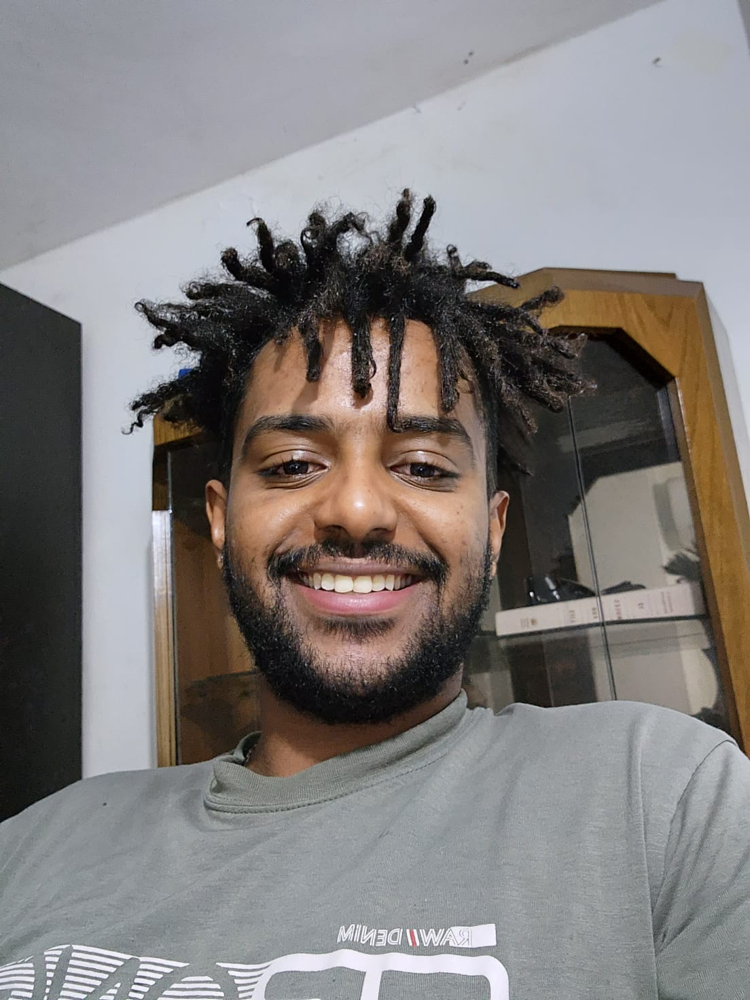

Biniam Abrha Tsegay
PhD Candidate at the School of Engineering,
University of British Columbia Okanagan
Advised by Dr. Nicolás M. Peleato
I develop machine learning and generative AI frameworks to improve water distribution system modelling, demand forecasting, and operational decision-making. My work bridges data-driven methods with physical water infrastructure — helping utilities make better decisions with uncertain, limited, or heterogeneous data.

Research Interests
Generative AI
Machine Learning
Water Demand Forecasting
Water Distribution Systems
Digital Twins
Smart Water Metering
Uncertainty Quantification
Reinforcement Learning
Human-AI Interaction
Publications

Under Review
Forecasting-Guided Generative AI for Improved Water Demand Forecasting Across Aggregation Scales
Water Research · 2025
Proposes CFT-VAE, a conditional variational autoencoder that generates synthetic smart meter data
aligned with forecasting objectives. Evaluated across six forecasting models and multiple aggregation
levels, achieving up to 65% improvement in forecasting accuracy and statistically significant gains
in 23 of 24 model-aggregation comparisons.

Published · Water Research (IF 11.4)
Enhancing Long-Term Water Quality Modeling by Addressing Base Demand, Demand Patterns, and Temperature Uncertainty Using Unsupervised Machine Learning Techniques
Water Research, Vol. 268, 2025
Introduces a three-module unsupervised framework using Gaussian Mixture Models to represent
uncertainty in water demand for EPANET/WNTR simulations. Allows operators to use simple
linguistic inputs like "high demand" instead of precise numerical values, achieving
Jensen-Shannon Divergence below 0.008 across all demand clusters.
Additional projects in progress on agent-based modeling for human–AI decision support and reinforcement learning for water distribution system control.
News
Apr 2026
Presented research on weather-informed data augmentation for water demand forecasting at the BCWWA 2026 Annual Conference, Kelowna, BC.
2025
Presented at the Canadian Society for Civil Engineering (CSCE) Annual Conference, Winnipeg — "Application of Generative Models for Data Augmentation in Smart Water Meter Data."
2025
Participated in collaborative visit with the City of Salmon Arm water utility to discuss data-driven water management applications.
Oct 2024
First PhD paper published in Water Research (Impact Factor 11.4).
2025
Advanced to PhD Candidacy at UBC Okanagan.
2023
Started PhD at UBC Okanagan, School of Engineering, supported by NSERC Alliance Grant.